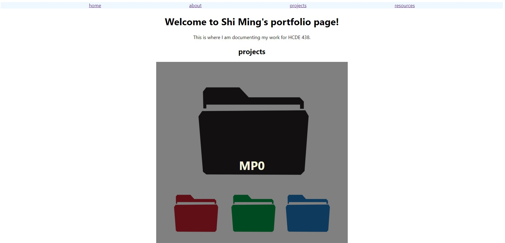
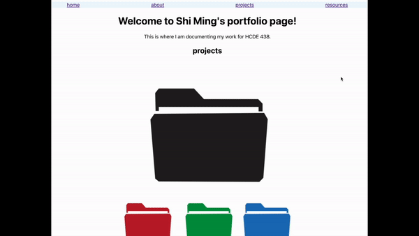

MP0 - Portfolio Page
The Process
- Cloned my git repository
- Created necessary
HTML and CSS files
- Implemented nav bar for all pages
- Filled about me and resources (cheatsheet) pages with content
- Implemented my CSS transition in my home page

CSS Transition

This CSS transition is inspired by the first CSS transition in the
animatable
called background-color. I wanted to incorporate a similar transition to the home page of my site,
where I will showcase all of my work in HCDE 438. This transition occurs when the user hovers over
a portfolio project in the home page. Upon hovering a project, the user uncovers the project name fading in
with a dark background color for better visibilty of the project name.
Although this transition utilized mulitple different CSS classes and properties, the main css
properties are: "opacity, transition: ease-out, and transform: translateY".
Issue when implementing CSS transition
The biggest issue I found in this project was achieving a desired
CSS transition for my main home page. I struggled with making the project title appear center
of the image. Originally, the main text would not be centered on the picture, but instead it was stacked below the picture.
This transition required me to use the "position: absolute" CSS property
to stack my text element on top of the picture.
Looking forward in the Future
I plan on continuing implementing/improving on the following for my site:
- Dropdown for new projects and resources pages in nav bar
- General content/element organization & design
- Establishing a color scheme
- Dark/light mode toggle
- More cool CSS transitions!